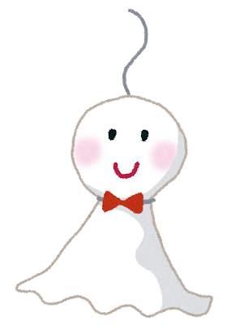

image
背景画像元『gogh』
work
作品元『天気の子』
— invitation —
第 １ 回 コ ス プ レ イ ベ ン ト
『 天 気 の 子 』
非 公 式
A R A I S H I I · ２０２６
tap to begin
チャーハン
天 気
フォト

本 家
play official
×
— 本 家 映 像 —
『 天 気 の 子 』 予 告
© toho · official trailer
— mission —
← back